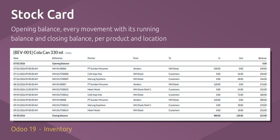
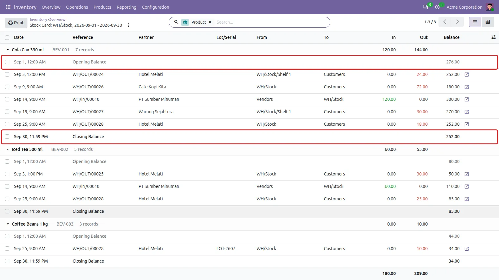
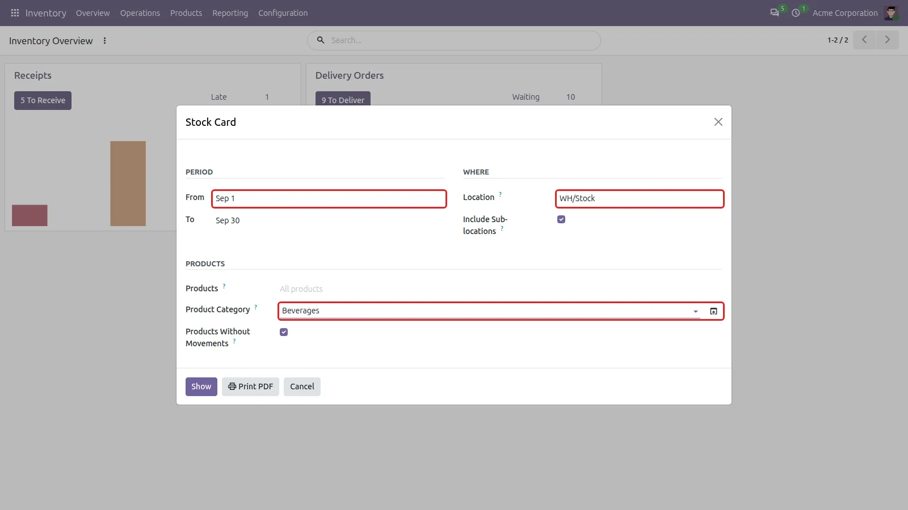
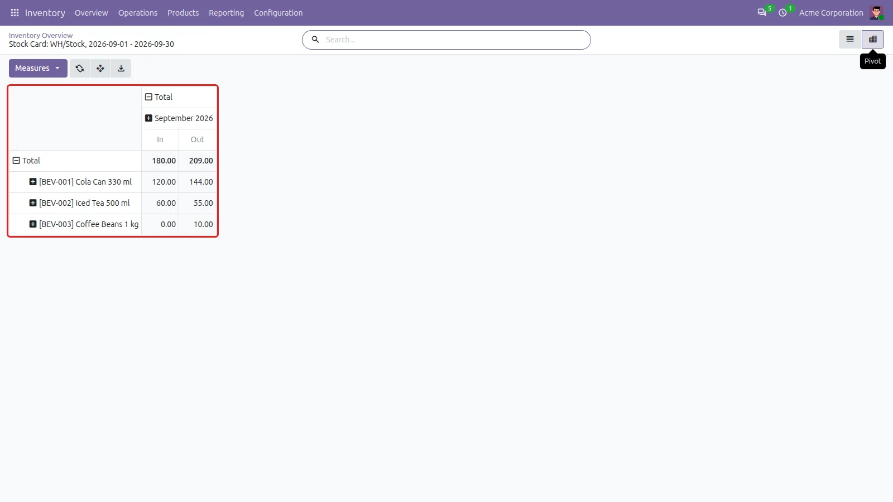
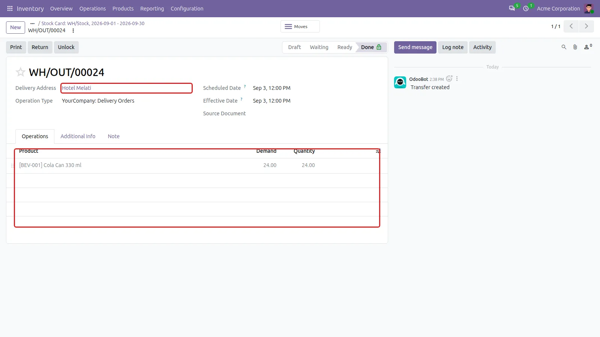
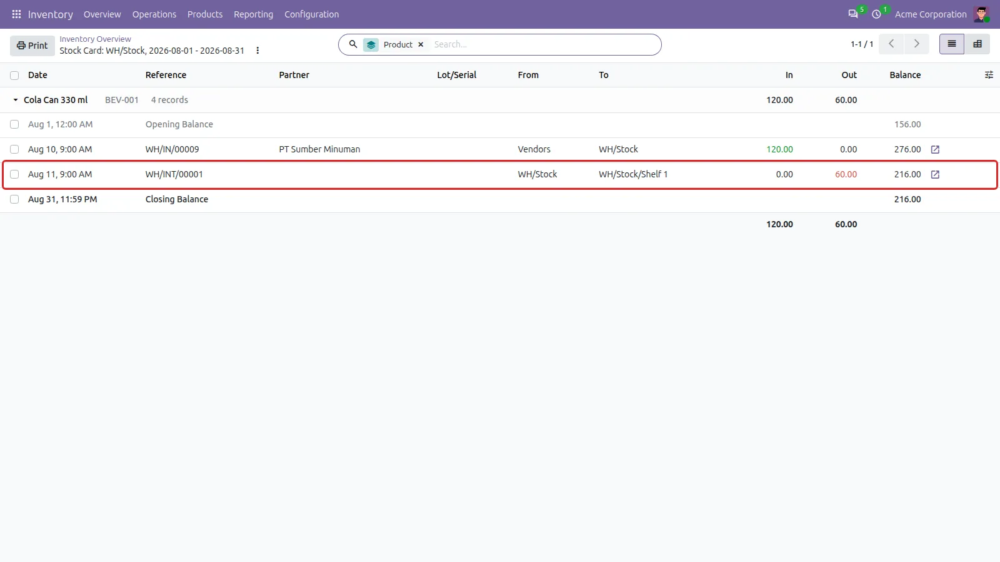
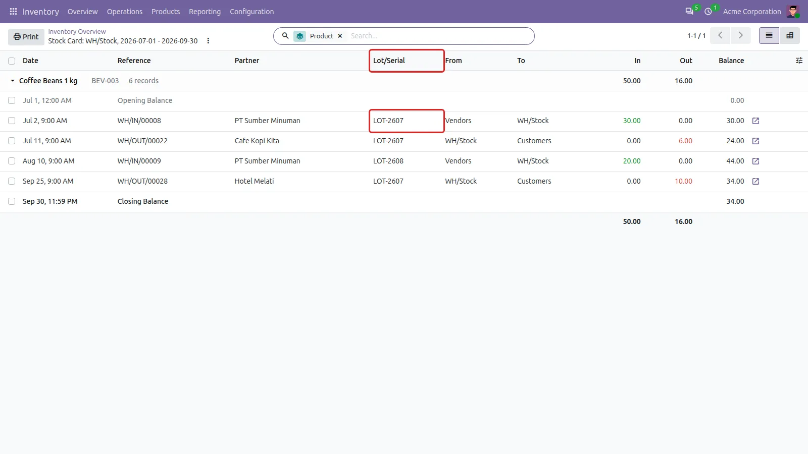
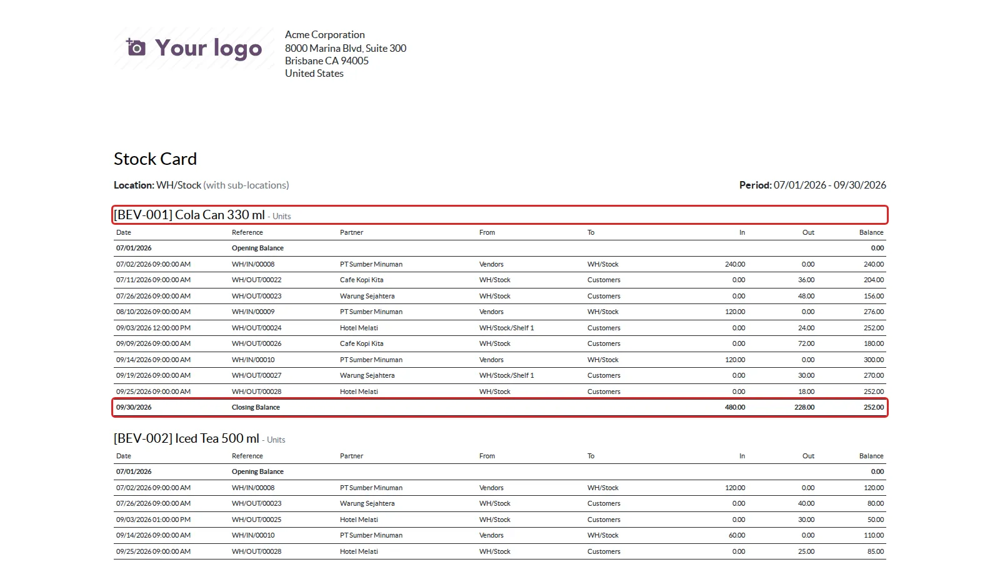
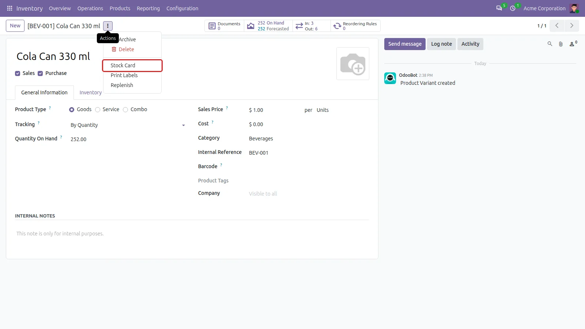

Stock Card Report - Kardex with Running Balance
Stock card, kardex and stock ledger per product and location: opening balance, every move with its running balance, closing balance, on screen and in PDF.
- Price
- $19
- Odoo versions
- 16.0
- 17.0
- 18.0
- 19.0
- 20.0
- Technical name
tamadoo_stock_card- License
- OPL-1

Video
Screen recording in Odoo 20.0 with demo data, no sound.
Text and screenshots below are from the Odoo 20.0 version of this module.
The classic stock card per product and location: opening balance, every receipt, delivery and transfer with its running balance, and the closing balance, on screen and as a PDF.
Every movement, with its balance


What you get
Any period
Pick the days; the opening balance is computed from all earlier history, the last day counts until midnight in your time zone.
Any location
A warehouse stock location with its shelves and bins, or one single bin. Moves between its own sub-locations are left out.
Running balance
Every done receipt, delivery, transfer, adjustment and scrap in order, with In, Out and the balance after it.
Right units
Quantities converted to the product's unit, whatever unit the operation used (2 Dozens in = 24 Units).
Partner and lot
Each line shows the transfer, the partner and the lot/serial number; open the transfer in one click.
Filter and analyse
By products or category, In / Out filters, group by partner or day, pivot per product and month, export to Excel.
PDF stock card
One card per product with opening and closing balance and period totals, on your company letterhead.
From any product
Start it from Inventory → Reporting → Stock Card or from the Action menu of products.
Adds up
The closing balance equals the quantity on hand at that location; tested against Odoo's own quantities.
Step by step
Choose period, location and products
Inventory → Reporting → Stock Card: here September at WH/Stock with its shelves, category Beverages.

The stock card
Per product: opening balance, every movement with partner, lot, from / to, In, Out and running balance, closing balance. Group totals show In and Out of the period.

Pivot
In and Out per product and month.

Open the transfer
The arrow on a line opens the delivery or receipt behind it.

One location only
Without sub-locations, the transfer from WH/Stock to Shelf 1 counts as Out.

Lots and serial numbers
Lot-tracked products show the lot of every movement.

The PDF stock card, one table per product with period totals on the closing line.

From a product
Action → Stock Card on a product opens the wizard for that product.

Set up in 5 minutes
- Install the module (depends on stock only).
- Open Inventory → Reporting → Stock Card, or Action → Stock Card on products.
- Choose the period, the location (sub-locations included by default) and optionally products or a category.
- Click Show for the interactive card or Print PDF; the list also has a Print button.
Get Stock Card Report
Questions before buying? Write to tama.odoo@gmail.com.